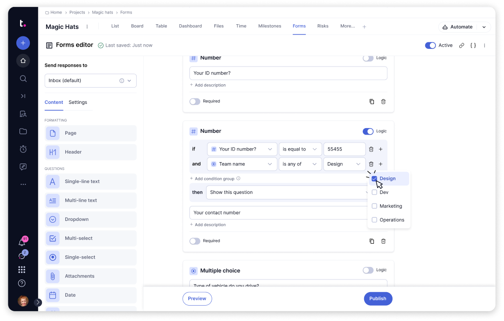
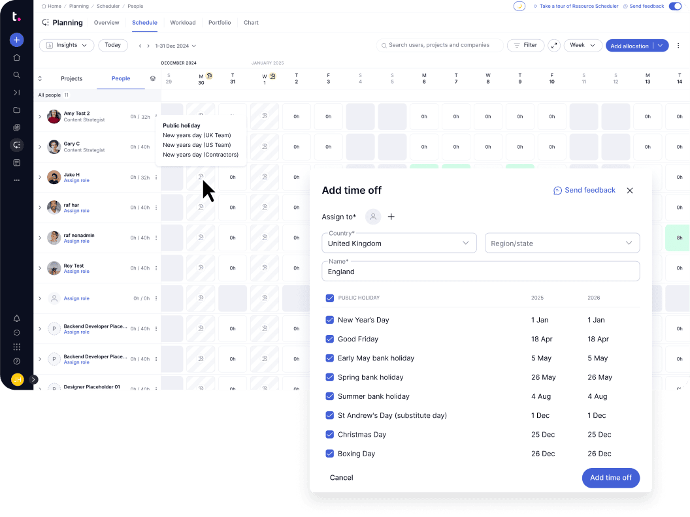
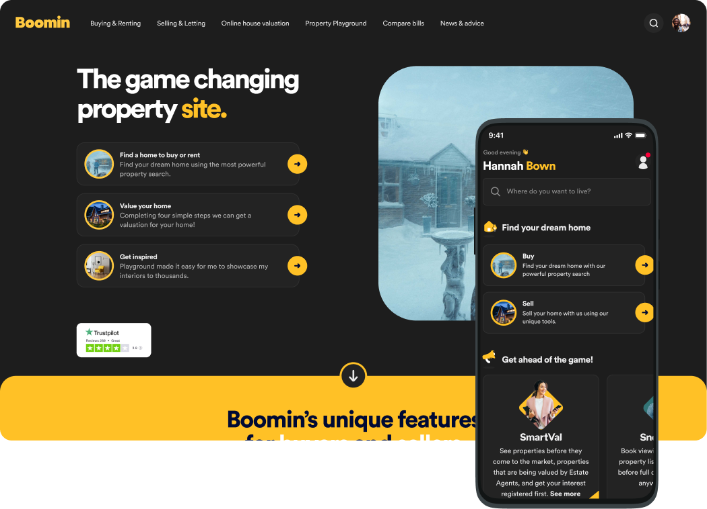

Case studies
Selected work across design systems, SAAS and B2B products.

Reducing form complexity to improve data accuracy
Introduced rule-based conditional logic to Teamwork Forms, turning long static forms into dynamic experiences that only ask what's relevant.
Discovery, research & design · Teamwork (SAAS)

Solving availability to restore planning confidence
Designed a system-wide public holidays solution with bulk management and automated recurrence, cutting manual entry and making planning data trustworthy.
Discovery, research, strategy & design · Teamwork (B2B)

Building the foundation for a scalable design system
Led the foundations layer of Boomin's design system (Mosaic): colour, type, grid, space, shadow and icons, reducing design and dev debt across the product team.
Design system architecture & foundations · Boomin (Web & App)

Reducing food waste through a smarter household pantry
A mobile-first app that closes the loop between what you buy, what's about to expire, and what you can cook tonight, designed, built and used daily.
Product strategy, design & development · Personal project

Automating metric tracking with AI
An internal tool that turns a Figma file into a ready-to-hand-off tracking plan: what to measure, why, and where.
Concept, design & build · Self-initiated (Internal tool)